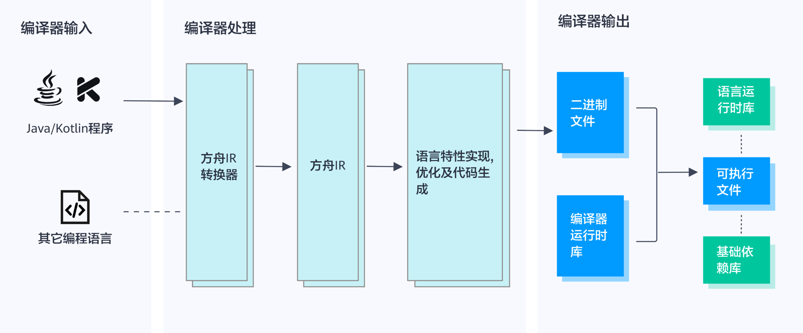
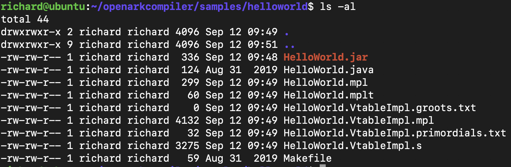
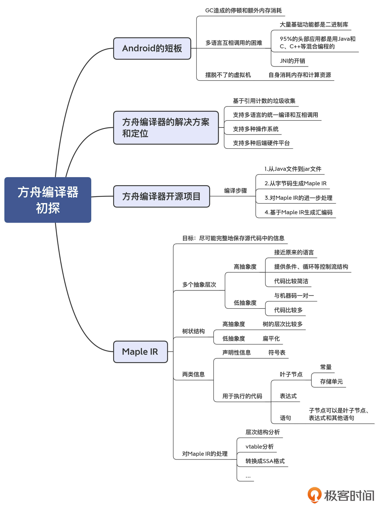

- 00 学习指南 如何学习这门编译原理实战课？.md.html
- 00 开篇词 在真实世界的编译器中游历.md.html
- 01 编译的全过程都悄悄做了哪些事情？.md.html
- 02 词法分析：用两种方式构造有限自动机.md.html
- 03 语法分析：两个基本功和两种算法思路.md.html
- 04 语义分析：让程序符合语义规则.md.html
- 05 运行时机制：程序如何运行，你有发言权.md.html
- 06 中间代码：不是只有一副面孔.md.html
- 07 代码优化：跟编译器做朋友，让你的代码飞起来.md.html
- 08 代码生成：如何实现机器相关的优化？.md.html
- 09 Java编译器（一）：手写的编译器有什么优势？.md.html
- 10 Java编译器（二）：语法分析之后，还要做些什么？.md.html
- 11 Java编译器（三）：属性分析和数据流分析.md.html
- 12 Java编译器（四）：去除语法糖和生成字节码.md.html
- 13 Java JIT编译器（一）：动手修改Graal编译器.md.html
- 14 Java JIT编译器（二）：Sea of Nodes为何如此强大？.md.html
- 15 Java JIT编译器（三）：探究内联和逃逸分析的算法原理.md.html
- 16 Java JIT编译器（四）：Graal的后端是如何工作的？.md.html
- 17 Python编译器（一）：如何用工具生成编译器？.md.html
- 18 Python编译器（二）：从AST到字节码.md.html
- 19 Python编译器（三）：运行时机制.md.html
- 20 JavaScript编译器（一）：V8的解析和编译过程.md.html
- 21 JavaScript编译器（二）：V8的解释器和优化编译器.md.html
- 22 Julia编译器（一）：如何让动态语言性能很高？.md.html
- 23 Julia编译器（二）：如何利用LLVM的优化和后端功能？.md.html
- 24 Go语言编译器：把它当作教科书吧.md.html
- 25 MySQL编译器（一）：解析一条SQL语句的执行过程.md.html
- 26 MySQL编译器（二）：编译技术如何帮你提升数据库性能？.md.html
- 27 课前导读：学习现代语言设计的正确姿势.md.html
- 28 前端总结：语言设计也有人机工程学.md.html
- 29 中端总结：不遗余力地进行代码优化.md.html
- 30 后端总结：充分发挥硬件的能力.md.html
- 31 运行时（一）：从0到语言级的虚拟化.md.html
- 32 运行时（二）：垃圾收集与语言的特性有关吗？.md.html
- 33 并发中的编译技术（一）：如何从语言层面支持线程？.md.html
- 34 并发中的编译技术（二）：如何从语言层面支持协程？.md.html
- 35 并发中的编译技术（三）：Erlang语言厉害在哪里？.md.html
- 36 高级特性（一）：揭秘元编程的实现机制.md.html
- 37 高级特性（二）：揭秘泛型编程的实现机制.md.html
- 38 综合实现（一）：如何实现面向对象编程？.md.html
- 39 综合实现（二）：如何实现函数式编程？.md.html
- 40 成果检验：方舟编译器的优势在哪里？.md.html
- 不定期加餐1 远程办公，需要你我具备什么样的素质？.md.html
- 不定期加餐2 学习技术的过程，其实是训练心理素质的过程.md.html
- 不定期加餐3 这几年，打动我的两本好书.md.html
- 不定期加餐4 从身边的牛人身上，我学到的一些优秀品质.md.html
- 不定期加餐5 借助实例，探究C++编译器的内部机制.md.html
- 划重点 7种编译器的核心概念与算法.md.html
- 期末答疑与总结 再次审视学习编译原理的作用.md.html
- 热点问题答疑 如何吃透7种真实的编译器？.md.html
- 用户故事 易昊：程序员不止有Bug和加班，还有诗和远方.md.html
- 知识地图 一起来复习编译技术核心概念与算法.md.html
- 结束语 实战是唯一标准！.md.html
- 捐赠
40 成果检验：方舟编译器的优势在哪里？
你好，我是宫文学。到这里，咱们的课程就已经进入尾声了。在这门课程里，通过查看真实的编译器，你应该已经积累了不少对编译器的直观认识。前面我们研究的各种编译器，都是国外的产品或项目。而这一讲呢，我们则要看看一个有中国血统的编译器：方舟编译器。
通过阅读方舟编译器已经公开的代码和文档，在解析它的过程中，你可以检验一下自己的所学，谈谈你对它的认识。比如，跟你了解的其他编译器相比，它有什么特点？先进性如何？你是否有兴趣利用方舟编译器做点实际项目？等等。
不过，到目前为止，由于方舟编译器开源的部分仍然比较有限，所以这一讲我们只根据已经掌握的信息做一些分析。其中涉及两个大的话题，一是对方舟编译器的定位和设计思路的分析，二是对方舟编译器所使用的Maple IR的介绍。
好，首先，我借助Android对应用开发支持的缺陷，来谈一下为什么方舟编译器是必要的。
Android的不足
为什么要研发一款自己的编译器？对于一个大的技术生态而言，语言的编译和运行体系非常重要。它处在上层应用和下层硬件之间，直接决定了应用软件能否充分地发挥出硬件的性能。对于移动应用生态而言，我国拥有体量最大的移动用户和领先的移动应用，也有着最大的手机制造量。可是，对于让上层应用和底层硬件得以发挥最大能力的编译器和运行时，我们却缺少话语权。
实际上，我认为Android对应用开发的支持并不够好。我猜测，掌控Android生态的谷歌公司，对于移动应用开发和手机制造都没有关系到切身利益，因此创新的动力不足。
我之所以说Android对应用开发的支持不够好，这其实跟苹果的系统稍加对比就很清楚了。同样的应用，在苹果手机上会运行得更流畅，且消耗的内存也更低。所以Android手机只好增加更多的CPU内核和更多的内存。
你可能会问，谷歌不是也有自己的应用吗？对应用的支持也关系到谷歌自己的利益呀。那我这里其实要补充一下，我说的应用开发，指的是用Java和Kotlin开发的应用，这也是大部分Android平台上的应用开发者所采用的语言。而像谷歌这样拥有强大技术力量的互联网巨头们，通常对于性能要求比较高的代码，是用C开发的。比如微信的关键逻辑就是用C编写的；像手机游戏这种对性能要求比较高的应用，底层的游戏引擎也是基于C/C++实现的。
这些开发者们不采用Java的原因，是因为Java在Android平台上的编译和运行方式有待提高。Android为了提升应用的运行速度，一直在尝试升级其应用运行机制。从最早的仅仅解释执行字节码，到引入JIT编译机制，到当前版本的ART（Android Runtime）支持AOT、JIT和基于画像的编译机制。尽管如此，Android对应用的支持仍然存在明显的短板。
第一个短板，是垃圾收集机制。我们知道，Java基于标记-拷贝算法的垃圾收集机制有两个缺陷。一是要占据更多的内存，二是在垃圾收集的时候会有停顿，导致应用不流畅。在系统资源紧张的时候，更是会强制做内存收集，引起整个系统的卡顿。
实际上，Java的内存管理机制使得它一直不太适合编写客户端应用。就算在台式机上，用Java编写的客户端应用同样会占用很大的内存，并且时不时会有卡顿。你如果使用过Eclipse和IDEA，应该就会有这样的体会。
第二个短板，是不同语言的融合问题。Android系统中大量的底层功能都是C/C++实现，而Java应用只是去调用它们。比如，图形界面的绘制和刷新，是由一个叫做Skia的库来实现的，这个库是用C/C++编写的，各种窗口控件都是在Skia的基础上封装出来的。所以，用户在界面上的操作，背后就有大量的JNI调用。
问题是，Java通过JNI调用C语言的库的时候，实现成本是很高的，因为两种不同语言的数据类型、调用约定完全不同，又牵涉到跨语言的异常传播和内存管理，所以Java不得不通过虚拟机进行昂贵的处理，效率十分低下。
据调查，95%的顶级移动应用都是用Java和C、C++等混合开发的。所以，让不同语言开发的功能能够更好地互相调用，是一个具有普遍意义的问题。
第三个短板，就是Android的运行时一直还是受Java虚拟机思路的影响，一直摆脱不了虚拟机。虚拟机本身要占据内存资源和CPU资源。在做即时编译的时候，也要消耗额外的资源。
那么如何解决这些问题呢？我们来看看方舟编译器的解决方案。
方舟编译器的解决方案
方舟编译器的目标并不仅仅是为了替代Android上的应用开发和运行环境。但我们可以通过方舟是如何解决Android应用开发的问题，来深入了解一下方舟编译器。
我们先来看看，方舟编译器是怎么解决垃圾收集的问题的。
不过，在讨论方舟的方案之前，我们不妨先参考一下苹果的方案做个对照。苹果采用的开发语言，无论是Objective-C，还是后来的Swift，都是采用引用计数技术。引用计数可以实时回收内存垃圾，所以没有卡顿。并且它也不用像标记-拷贝算法那样，需要保留额外的内存。而方舟编译器，采用的是跟苹果一样的思路，同样采用了引用计数技术。
当然，这里肯定会有孰优孰劣的争论。我们之前也讲过，采用引用计数法，每次在变量引用对象的时候都要增加引用计数，而在退出变量的作用域或者变量不再指向该对象时，又要减少引用计数，这会导致一些额外的性能开销。当对象在多个线程之间共享的时候，增减引用计数的操作还要加锁，从而进一步导致了性能的降低。
不过，针对引用计数对性能的损耗，我们可以在编译器中通过多种优化算法得到改善，尽量减少不必要的增减计数的操作，也减少不必要的锁操作。另外，有些语言在设计上也会做一些限制，比如引入弱引用机制，从而降低垃圾收集的负担。
无论如何，在全面考察了引用计数方法的优缺点以后，你仍然会发现它其实更适合开发客户端应用。
关于第二个问题，也就是不同语言的融合问题。华为采取的方法是，让Java语言的程序和基于C、C++等语言的程序按照同一套框架做编译。无论前端是什么语言，都统一编译成机器码，同时不同语言的程序互相调用的时候，也没有额外的开销。
下图是方舟编译器的文档中所使用的架构图。你能看到它的设计目标是支持多种语言，都统一转换成方舟IR，然后进行统一的优化处理，再生成机器码的可执行文件。

这个技术方案其实非常大胆。它不仅解决了不同语言之间的互相调用问题，也彻底抛弃了植根于JVM的虚拟机思路。方舟编译器新的思路是不要虚拟机，最大程度地以机器码的方式运行，再加上一个非常小的运行时。
我说这个技术方案大胆，是因为方舟编译器彻底抛弃了Java原有的运行方案，包括内存布局、调用约定、对象结构、分层编译机制等。我们在第二个模块讲过Graal，在仍然基于JVM运行的情况下，JIT只是尽力做改良，它随时都有一个退路，就是退到用字节码解释器去执行。就算采用AOT以后，运行时可以变得小一些，但Java运行机制的大框架仍然是不变的。
我也介绍过，GraalVM支持对多种语言做统一编译，其中也包含了对C语言的支持，并且也支持语言之间的互相调用。但即便如此，它仍是改良主义，它不会抛弃Java原来的技术积累。
而方舟编译器不是在做改良，而是在做革命。它对Java的编译更像是对C/C++等语言的编译，抛弃了JVM的那一套思路。
这个方案不仅大胆，而且难度更高。因为这样就不再像分层编译那样有退路，方舟编译器需要把所有的Java语义都静态编译成机器码。而对于那些比较动态的语义，比如运行时的动态绑定、Reflection机制等，是挑战比较大的。
那方舟编译器目前的成果如何呢？根据华为官方的介绍，方舟编译器可以使安卓系统的操作流畅度提升24%，响应速度提升44%，第三方应用操作流畅度提升高达60%。这就是方舟编译器的厉害之处，这也证明方舟编译器的大胆革新之路是走对了的。
我们目前只讨论了方舟编译器对Android平台的改进。其实，方舟编译器的目标操作系统不仅仅是Android平台，它本质上可移植所有的操作系统，也包括华为自己的鸿蒙操作系统。对于硬件平台也一样，它可以支持从手机到物联网设备的各种硬件架构。
所以，你能看出，方舟编译器真的是志存高远。它不是为了解决某一个小问题，而是致力于打造一套新的应用开发生态。
好了，通过上面的介绍，你应该对方舟编译器的定位有了一个了解。接下来的问题是，方舟编译器的内部到底是怎样的呢？
方舟编译器的开源项目
要深入了解方舟编译器，还是必须要从它的源代码入手。从去年9月份开源以来，方舟编译器吸引了很多人的目光。不过方舟编译器是逐步开源的，由于开放出来的源代码必须在知识产权等方面能够经得起严格的审查，因此到现在为止，我们能看到的开源版本号还只是0.2版，开放出来的功能并不多。
我参照方舟的环境配置文档，在Ubuntu 16.04上做好了环境配置。
注意：请尽量完全按照文档的要求来配置环境，避免出现不必要的错误。不要嫌某些软件的版本不够新。
接着，你可以继续根据开发者指南来编译方舟编译器本身。方舟编译器本身的代码是用C++写的，需要用LLVM加Clang编译，这说明它到目前还没有实现自举。然后，你可以编译一下示例程序。比如，用下面的四个命令，可以编译出HelloWorld样例。
source build/envsetup.sh; make; cd samples/helloworld/; make
这个“hellowold”目录原来只有一个HelloWorld.java源代码，经过编译后，形成了下面的文件：

如果你跟踪查看编译过程，你会发现中间有几步的操作：
第一步，执行java2jar，这一步是调用Java的编译器，把Java文件先编译成class文件，然后打包成jar文件。
补充：java2jar实际上是一个简单的脚本文件，你可以查看里面的内容。
第二步，执行jbc2mpl，也就是把Java字节码转换成Maple IR。Maple IR是方舟编译器的IR，我下面会展开介绍。编译后生成的Maple IR保存到了HelloWorld.mpl中。
第三步，通过maple命令，执行mpl2mpl和mplme这两项对Maple IR做分析和优化的工作。这其中，很重要的一个步骤，就是把Java方法的动态绑定，用vtable做了实现，并生成了一个新的Maple IR文件：HelloWorld.VtableImpl.mpl。
最后一步，调用mplcg命令，将Maple IR转换成汇编代码，保存到一个以.s结尾的文件里面。
注意，我们目前还没有办法编译成直接可以执行的文件。当前开源的版本，既没有编译器前端部分的代码，也没有后端部分的代码，甚至基于Maple IR的一些常见的优化，比如内联、公共子表达式消除、常量传播等等，都是没有的。目前开源的版本主要展现了Maple IR，以及对Maple IR做的一些变换，比如转换成SSA格式，以便进行后续的分析处理。
到这里，你可能会有一点失望，因为当前开放出来的东西确实有点少。但是不要紧，方舟编译器既然选择首先开放Maple IR的设计，这说明Maple IR在整个方舟编译器的体系中是很重要的。
事实也确实如此。方舟编译器的首席科学家，Fred Chow（周志德）先生，曾发表过一篇论文：The increasing significance of intermediate representations in compilers。他指出，IR的设计会影响优化的效果；IR的调整，会导致编译器实现的重大调整。他还提出：如果不同体系的IR可以实现转换的话，就可以加深编译器之间的合作。
基于这些思想，方舟编译器特别重视IR的设计，因为方舟编译器的设计目标，是将多种语言翻译成统一的IR，然后共享优化算法和后端。这就要求Maple IR必须要能够兼容各种不同语言的差异性才行。
那接下来，我们就具体看看Maple IR的特点。
志存高远的Maple IR
方舟开放的资料中有一个doc目录，Maple IR的设计文档就在其中。这篇文档写得很细致，从中你能够学习到IR设计的很多思想，值得仔细阅读。
文档的开头一段指出，由于源代码中的任何信息，在后续的分析和优化过程中都可能有用，所以Maple IR的目标是尽可能完整地呈现源代码中的信息。
这里，我想提醒你注意不要忽略这一句话。它作为文档的第一段，可不是随意而为。实际上，像LLVM的作者Chris Lattner，就认为LLVM的IR损失了一些源代码的信息，而很多语言的编译器都会在转换到LLVM IR之前，先做一个自己的IR，做一些体现自己语言特色的分析工作。为了方便满足这些需求，他后来又启动了一个新项目：MLIR。你可以通过这篇论文了解Lattner的观点。
Maple IR则在一开头就注意到了这种需求，它提供了对高、中、低不同层次的IR的表达能力。我们在分析别的编译器的时候，比如Graal的编译器，也曾经讲过它的IR也是分层次的，但其实Graal对特定语言的高层次IR（HIR）的表达能力是不够强的。
HIR特别像高级语言，特定于具体语言的分析和优化都可以在HIR上进行。它的特点是提供了很多语言结构，比如if结构、循环结构等；因为抽象层次高，所以IR比较简洁。
与Graal和V8一样，Maple IR也用了一种数据结构来表达从高到低不同抽象层次的操作。不过不同于Graal和V8采用了图的结构，Maple IR采用的是树结构。在HIR这个层次，这个树结构跟原始语言的结构很相似。这听上去跟AST差不多。
随着编译过程的深化，抽象的操作被Lower成更低级的操作，代码也就变得更多，同时树结构也变得越来越扁平，最后变成了指令的列表。
那么，既然Maple IR是用同一个数据结构来表达不同抽象层次的语义，它是以什么来划分不同的抽象层次呢？答案是通过下面两个要素：
- 被允许使用的操作码：抽象层次越高，操作码的种类就越多，有一些是某些语言特有的操作。而在最低的层次，只允许那些与机器码几乎一一对应的操作码。
- 代码结构：在较高的抽象层次上，树的层级也比较多；在最低的抽象层次上，会变成扁平的指令列表。
再进一步，Maple IR把信息划分成了两类。一类是声明性的信息，用于定义程序的结构，比如函数、变量、类型等，这些信息其实也就是符号表。另一类是用于执行的代码，它们表现为三类节点：叶子节点（常量或存储单元）、表达式节点、语句节点。
我用一个简单的示例程序Foo.java，带你看看它所生成的Maple IR是什么样子的。
public class Foo{
public int atLeastTen(int x){
if (x < 10)
return 10;
else
return x;
}
public int exp(int x, int y){
return x*3+y+1;
}
}
示例程序编译后，会生成.mpl文件。这个文件是用文本格式来表示Maple IR，你甚至可以用这种格式来写程序，然后编译成可执行文件。当这个格式被读入方舟编译器后，就会变成内存格式。另外，Maple IR也可以表示成二进制格式。到这里，你是不是会有似曾相识的感觉，会联想到LLVM的IR？对了，LLVM也可以用三种方式来表示IR（文本格式、内存格式、二进制格式）。
打开.mpl文件，你首先会在文件顶部看到一些符号表信息，包括类、方法等符号。
javaclass $LFoo_3B <$LFoo_3B> public
func &LFoo_3B_7C_3Cinit_3E_7C_28_29V public constructor (var %_this <* <$LFoo_3B>>) void
func &LFoo_3B_7CatLeastTen_7C_28I_29I public virtual (var %_this <* <$LFoo_3B>>, var %Reg3_I i32) i32
var $__cinf_Ljava_2Flang_2FString_3B extern <$__class_meta__>
func &MCC_GetOrInsertLiteral () <* <$Ljava_2Flang_2FString_3B>>
接下来就是每个方法具体的定义了。比如，exp方法对应的IR如下：
func &LFoo_3B_7Cexp_7C_28II_29I public virtual (var %_this <* <$LFoo_3B>>, var %Reg3_I i32, var %Reg4_I i32) i32 {
funcid 48155 #函数id
var %Reg2_R43694 <* <$LFoo_3B>>
var %Reg0_I i32 #伪寄存器
var %Reg1_I i32
dassign %Reg2_R43694 0 (dread ref %_this)
#INSTIDX : 0||0000: iload_1
#INSTIDX : 1||0001: iconst_3
dassign %Reg0_I 0 (constval i32 3)
#INSTIDX : 2||0002: imul
dassign %Reg0_I 0 (mul i32 (dread i32 %Reg3_I, dread i32 %Reg0_I))
#INSTIDX : 3||0003: iload_2
#INSTIDX : 4||0004: iadd
dassign %Reg0_I 0 (add i32 (dread i32 %Reg0_I, dread i32 %Reg4_I))
#INSTIDX : 5||0005: iconst_1
dassign %Reg1_I 0 (constval i32 1)
#INSTIDX : 6||0006: iadd
dassign %Reg0_I 0 (add i32 (dread i32 %Reg0_I, dread i32 %Reg1_I))
#INSTIDX : 7||0007: ireturn
return (dread i32 %Reg0_I)
}
这里我给你稍加解释一下示例代码中的IR。
以func关键字开头定义一个函数。函数名称里体现了原来Java类的名称和方法名称。public和virtual关键字也是继承自原来的Java方法，在Java中这类public的方法都是virtual的，需要动态绑定。
接下来要注意的是用var声明，以%开头的三个伪寄存器。伪寄存器相当于本地变量，它的数量是无限的，在后端做寄存器分配的时候才对应成物理寄存器。
在这后面的是6个dassign语句。这是6个赋值语句，其中的d，是直接寻址的意思。有的dassgin操作符后面跟着的是常数（constval），有的跟着的是加法（add）或乘法（mul）表达式。而加法和乘法表达式里面，又可能进一步用到其他的表达式。这里就体现出了Maple IR的特点，即它是树状结构的。
那么，总结起来，示例函数体现了Maple IR最基本的结构特点：程序被分成一个个的函数。函数里呢，是顺序的一条条语句，而每条语句都是一个树状结构，树的节点可以是叶子节点、表达式，或者其他的语句。如果把函数内的每条语句作为函数的子节点，那么整个函数就是一个树状的数据结构。
另外，在示例程序中，还有一些以#开头的注释。这些注释代表了原来class文件中的字节码。目前方舟编译器里有一个字节码的前端，能够把字节码翻译成Maple IR。这个注释就体现了字节码和Maple IR的对应关系。
不过，上面的示例函数并没有体现出流程控制类的语句。我们再来看一下atLeastTen()方法对应的IR。atLeastTen()方法中有一个if语句，它能否被翻译成Maple IR的if语句呢？
func &LFoo_3B_7CatLeastTen_7C_28I_29I public virtual (var %_this <* <$LFoo_3B>>, var %Reg3_I i32) i32 {
funcid 48154
var %Reg2_R43694 <* <$LFoo_3B>>
var %Reg0_I i32
dassign %Reg2_R43694 0 (dread ref %_this)
#INSTIDX : 0||0000: iload_1
#INSTIDX : 1||0001: bipush
dassign %Reg0_I 0 (constval i32 10)
#INSTIDX : 3||0003: if_icmpge
brtrue @label0 (ge i32 i32 (dread i32 %Reg3_I, dread i32 %Reg0_I))
#INSTIDX : 6||0006: bipush
dassign %Reg0_I 0 (constval i32 10)
#INSTIDX : 8||0008: ireturn
return (dread i32 %Reg0_I)
@label0 #INSTIDX : 9||0009: iload_1
#INSTIDX : 10||000a: ireturn
return (dread i32 %Reg3_I)
}
在Maple IR中，提供了if语句，其语法跟C语言或Java语言的语法差不多：
if (<cond-expr>) {
<then-part> }
else {
<else-part>}
像if这样的控制流语句，还有doloop、dowhile和while，它们都被叫做层次化的控制流语句。
不过，在阅读了atLeastTen()对应的IR以后，你可能要失望了。因为这里面并没有提供if语句，而是通过一个brture语句做了跳转。brtrue被叫做平面化的控制流语句，它在满足某个条件的时候，会跳转到另一个语句去执行。类似的控制流语句还有brfalse、goto、return、switch等。
补充：由于这个.mpl文件是从字节码直接翻译过来的，但字节码里已经没有HIR级别的if结构了，而是使用了比较低级的if_icmpge指令，所以方舟编译器也就把它翻译成了同样等级的brtrue指令。
好了，通过这样的示例，你就直观地了解了Maple IR的特点。那么问题来了，当前的开源项目都基于Maple IR做了哪些处理呀？
你可以打开源代码中的src/maple_driver/defs/phases.def文件。这里面定义了一些对Maple IR的处理过程。比如：
- classhierarchy：对类的层次结构进行分析；
- vtableanalysis：为实现动态绑定而做的分析；
- reflectionanalysis：对使用Reflection的代码做分析，以便把它们静态化。
- ssa：把IR变成SSA格式
- ……
总的来说，当前对Maple IR的这些处理，有相当一部分是针对Java语言的特点，来做一些分析和处理，以便把Java完全编译成机器码。更多的分析和优化算法还没有开源，我们继续期待吧。
课程小结
这一讲我主要跟你探讨了方舟编译器的定位、设计思路，以及方舟编译器中最重要的数据结构：Maple IR。
对于方舟编译器的定位和设计思路，我认为它体现了一种大无畏的创新精神。与之相比，脱离不了JVM模子的Android运行时，倒有点裹足不前，使得Android在使用体验上多年来一直有点落后。
但在大胆创新的背后，也必须要有相应的实力支撑才行。据我得到的资料，华为的方舟编译器依托的是早年在美国设立的实验室所积累下来的团队，这个团队从2009年开始就依托编译技术做了很多研发，为内部的芯片设计也提供了一种语言。最重要的是，在这个过程中，华为积累了几百人来做编译和虚拟机的团队。前面提到的首席科学家，周志德先生，就是全球著名的编译技术专家，曾参与了Open64项目的研发。这些优秀的专家和人才，是华为和国内其他团队，未来可以在编译技术上有所作为的基础。那么，我也非常希望学习本课程的部分同学，以后也能参与其中呢。
对于Maple IR中分层设计的思想，我们在Graal、V8等编译器中都见到过。Maple IR的一个很大的优点，就是对HIR有更好地支持，从而尽量不丢失源代码中的信息，更好地用于分析和优化。
对于方舟编译器，根据已开源的资料和代码，我们目前只做了一些初步的了解。不过，只分享这么多的话，我觉得还不够满意，你也会觉得很不过瘾。并且，你可能还心存了很多疑问。比如说，Graal和V8都选择了图的数据结构，而Mapple IR选择了树。那么，在运行分析和优化算法上会有什么不同呢？我希望后续随着方舟编译器有更多部分的开源，我会继续跟你分享！
这节课的思维导图我也放在了这里，供你参考：

一课一思
你认为，用一种IR来表示所有类型的语言的话，都会有哪些挑战？你能否通过对Maple IR的阅读，找到Maple IR是如何应对这种挑战的？欢迎在留言区分享你的观点。
如果你身边也有对华为的方舟编译器十分感兴趣的朋友，非常欢迎把这节课的内容分享给他，我们一起交流探讨。感谢你的阅读，我们期末答疑再见！
© 2019 - 2023 Liangliang Lee. Powered by gin and hexo-theme-book.